Why these metals matter
This lecture is about magmatic-hydrothermal, granite-related deposits of tin (Sn), tungsten (W), bismuth (Bi) and molybdenum (Mo). Tin is the one you can’t live without. Its main use is as solder, about half of all tin mined, and there’s still no better replacement after hundreds of years; you can’t build a computer, phone or car without it. That’s why the USA and many other countries list tin as a critical mineral, and the USA produces none. A worry: about 40% of mined tin comes from artisanal miners or small companies, particularly in Brazil, Indonesia and Myanmar. slides 2 to 4 and 11 lecture recording, 26 Oct
Who mines it, who holds it
USGS figures from slides 2, 3, 12 and 18 (tin in kt; tungsten and bismuth in tonnes). The slide marks Australia’s tungsten reserve with an asterisk.
In Australia, by far the largest tin producer is Renison Bell on the west coast of Tasmania, with reserves of at least 180 kt Sn. NSW’s largest proven tin deposit is Taronga in the New England Fold Belt: 22 Mt at 0.16% Sn, about 36 kt of tin metal, a deposit that has opened and closed with the tin price. Global tin reserves have been falling, from an estimated 6100 kt in 2010 to 4700 kt in 2019. slides 3 and 4 lecture recording, 26 Oct
Tin minerals: cassiterite and stannite
Almost all tin ever mined comes from two minerals. , SnO₂, is tetragonal, adamantine, hardness 6 to 7 (between feldspar and quartz) and very dense (SG about 7.0). Its colour varies with impurities: black, brown, yellow, white or red. It forms equant to short prismatic crystals, “needle tin”, and also botryoidal, fibrous “wood tin” and granular masses. slide 5 lecture recording, 26 Oct
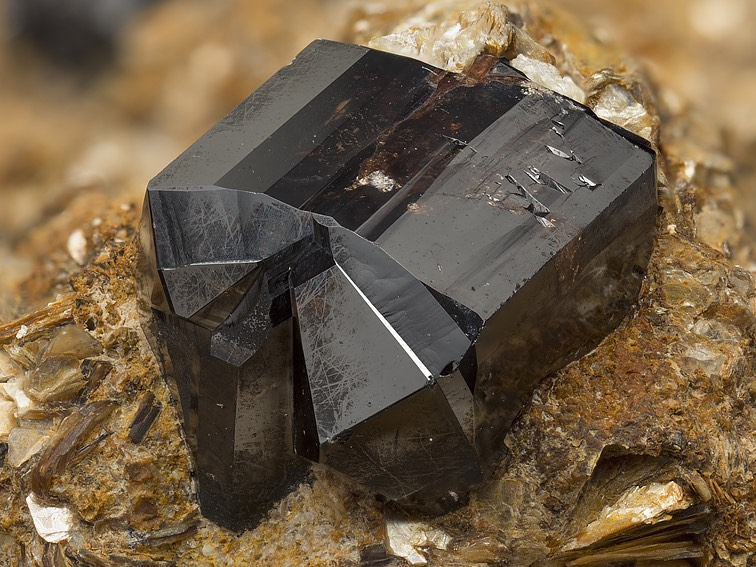
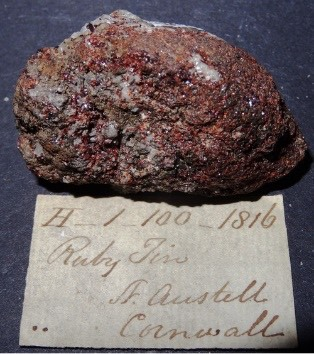
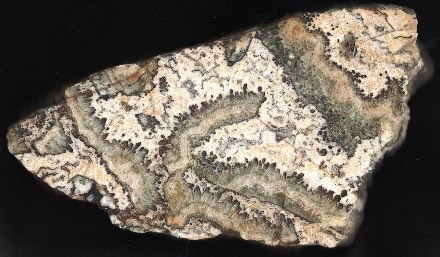
This doesn’t look like any tin ore you’d expect. Describe the banding, and suggest how it formed.
Show what I see
- Concentric, wavy, wood-grain bands of cream and yellow-brown to dark brown, fibrous in texture.
So this is wood tin, a fibrous, colloform cassiterite from Cornwall. The bands record sequential deposition from a hydrothermal vein: quartz, then cassiterite, then quartz, then cassiterite, over and over. It looks nothing like cassiterite, which is exactly why it’s worth remembering. slide 7 lecture recording, 26 Oct
Some cassiterite is a curiosity. At Wheal Coates in Cornwall, cassiterite has replaced orthoclase crystals, keeping their shape (pseudomorphs found nowhere else on Earth); at Emmaville in north-eastern NSW it has replaced fossil gastropods. Gem-quality cassiterite cut like a diamond has the same adamantine lustre but is far denser. Most cassiterite mined in eastern Australia has been alluvial, washed out of the granites into river gravels, but there is plenty of hard-rock potential left. slides 8 and 9 lecture recording, 26 Oct
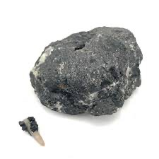
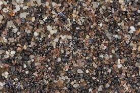
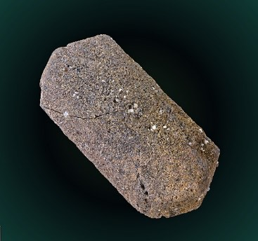
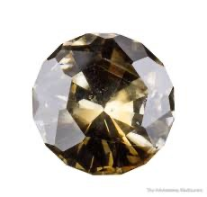
, Cu₂FeSnS₄, is a metallic grey tin sulphide. It forms in more sulphur-rich, reduced systems, with chalcopyrite, pyrite, sphalerite and tetrahedrite. slide 10
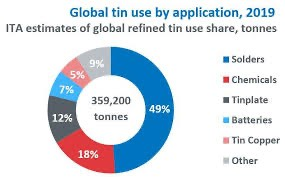
- Cassiterite SnO₂: adamantine, H 6 to 7, SG ~7; black to brown, also red (ruby tin), fibrous (wood tin), prismatic (needle tin), knee twins.
- Stannite Cu₂FeSnS₄: grey, metallic, in reduced, sulphide-rich systems.
- Tin use: about half is solder.
Tungsten: scheelite and wolframite
Only two tungsten minerals matter. , CaWO₄, is colourless, white, golden yellow, brown or orange, vitreous to adamantine, fairly soft (H 4.5 to 5), dense (SG 6.1) and usually massive or granular, sometimes in pseudo-octahedra. Its giveaway is bright blue-white fluorescence under ultraviolet light, so explorers really do go prospecting for scheelite at night with UV lamps. slides 13 and 14 lecture recording, 26 Oct
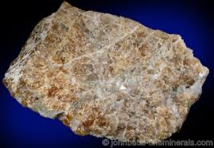
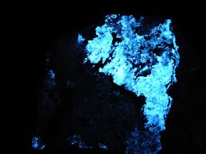
In daylight A is easy to overlook. What does B show, and why is it useful in the field?
Show what I see
- A: an unremarkable yellow-brown granular mass.
- B: the same kind of material glowing intense blue-white.
So it’s scheelite, which fluoresces blue-white under short-wave UV. At night, a UV lamp makes scheelite in outcrop, core or a waste dump light up against the minerals around it, a cheap and fast way to find and map tungsten. slide 14 lecture recording, 26 Oct
isn’t a single mineral species but the intermediate members of a series between ferberite (FeWO₄, dark brown to black, metallic, SG 7.58) and hübnerite (MnWO₄, yellow-brown to red-brown, SG about 7.1). Both are monoclinic, H 4 to 4.5, in prismatic to bladed crystals. Almost all eastern Australian wolframite is ferberite; South America and Colorado have more hübnerite. slides 15 and 16 lecture recording, 26 Oct
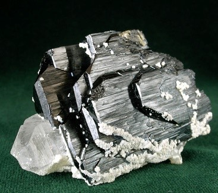
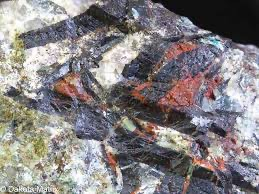
About 65% of tungsten goes into tungsten carbide, prized for its hardness, then steels and superalloys (17%), tungsten metal (10%) and chemicals (8%). Tungsten has the highest melting (3422 °C) and boiling (5930 °C) points of any element, a density of 19.25 and high corrosion resistance. Armour plating and hardened ammunition are major military uses, and with China producing the overwhelming majority, tungsten supply is a strategic worry; Australia produces little but has large reserves. slides 12 and 17 lecture recording, 26 Oct
Bismuth and molybdenum
Bismuth occurs in many minerals, but the economic ones are bismuthinite (Bi₂S₃: lead grey, metallic, soft, H 2 to 2.5, SG 6.78, prismatic to acicular, often fibrous) and native bismuth (cream-white to reddish-white, metallic, soft, SG about 9.7 to 9.8, mostly massive with strong cleavage). China dominates production, followed, surprisingly, by Laos. Bismuth goes into fire detectors and extinguishers and electrical fuses, and, as bismuth subsalicylate, into stomach-relief medicine. It’s also odd physically: solid bismuth is less dense than liquid bismuth. slides 18 to 21 lecture recording, 26 Oct
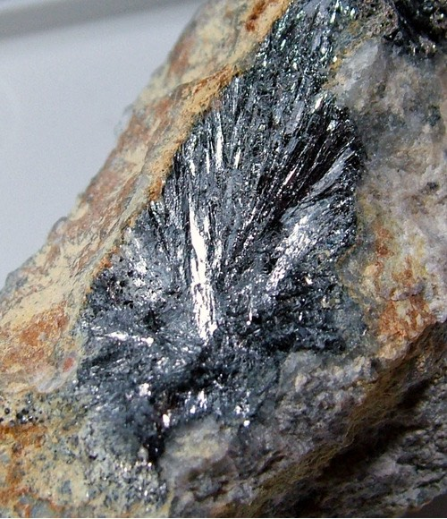
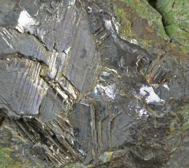
Molybdenum has one ore mineral, molybdenite (MoS₂: lead grey to black, metallic, extremely soft at H 1 to 1.5, SG about 4.6 to 4.7, in flexible platy hexagonal crystals). At the surface it alters, where iron and water are around, to bright yellow, powdery ferrimolybdite, or to pale blue ilsemannite. Molybdenum is mostly alloyed into steel for strength, hardness, conductivity and resistance to wear and corrosion, and is also used in lubricants, pigments and catalysts. slides 22 to 24 lecture recording, 26 Oct
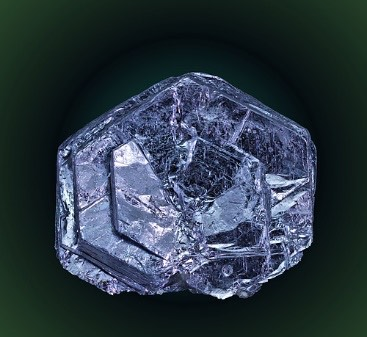
The gangue
The ore minerals are simple; the gangue isn’t. Granite-related Sn-W-Mo deposits carry quartz (often smoky), alkali feldspars (orthoclase, microcline), plagioclase (mostly albite, because these are lower-temperature systems), micas (muscovite, biotite and lithium micas), fluorite, apatite, beryl, black schorl tourmaline, topaz, carbonates (siderite, calcite) and sulphides (pyrite, pyrrhotite, sphalerite, chalcopyrite, arsenopyrite). The lithium micas can be a resource in their own right: Greenbushes in WA, now the world’s biggest hard-rock lithium mine, was first mined for tin. slide 25 lecture recording, 26 Oct
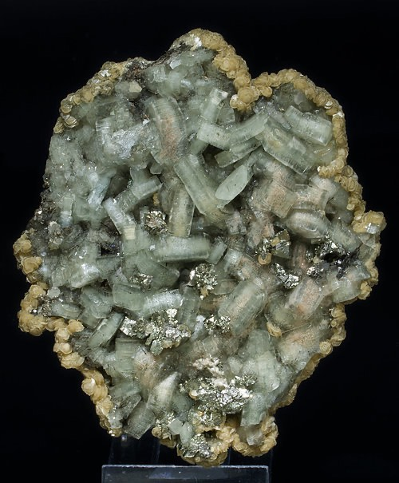
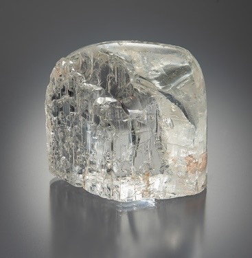
This colourless topaz has lost its sharp faces. What happened to it?
Show what I see
- Clear, colourless topaz with rounded, frosted, pitted surfaces.
So it’s been etched: partly dissolved by a later, very low-pH hydrothermal fluid. These systems see not one fluid but several pulses, and later ones can attack the minerals that earlier ones grew. slide 27 lecture recording, 26 Oct
Hand-specimen drill
Many of these minerals are in the lab hand-specimen set (cassiterite, wolframite, molybdenite, beryl, tourmaline and fluorite among them), so practise naming them from photos. Look at colour, lustre and crystal habit first, then think about hardness and density. slides 6 to 27
Name the mineral0 / 13
- Cassiterite: very heavy, adamantine, black to brown, hard (scratches glass); twins and short prisms.
- Wolframite: heavy, black (ferberite) to red-brown (hübnerite), bladed; scheelite: pale, heavy, fluoresces blue-white.
- Molybdenite: very soft (H 1 to 1.5), flexible platy hexagonal crystals, lead grey, metallic.
- Gangue clues to a granite system: topaz, beryl, schorl, fluorite, Li-mica, smoky quartz.
The granites behind them
This lecture focuses on vein and greisen Sn-W-Mo deposits, associated with high-level felsic granites emplaced at shallow depths, commonly 1.5 to 5 km. The granites are K-rich (abundant K-feldspar and micas), metaluminous to peraluminous and highly fractionated (high Rb/Sr). They come in two series: the , linked to Mo-W, and the , linked to Sn-W. The fluids come from the intrusions themselves, though metals and especially sulphur may also be leached from the country rocks by convection. slide 28 lecture recording, 26 Oct
They form in post-orogenic uplift (back arcs and continental interiors) and in crust thickened by continent-continent collision, mostly in Phanerozoic orogenic belts, as belts parallel to the continental margin with the magnetite series nearer the margin. Redox controls the ore minerals: in the slide’s framing, magnetite-series magmas keep sulphur in the melt and so allow sulphide-rich, stannite-bearing tin ores, while ilmenite-series magmas lose sulphide early, giving sulphide-poor, cassiterite-rich ores. Peraluminous means Al/(Na + K + 2Ca) > 1: the extra aluminium sits in cordierite, garnet, muscovite, andalusite, sillimanite, topaz and biotite. S-type granites are typically peraluminous. slides 29 and 30
Which granite, which metals?0 / 4
Volatiles and metal budgets
Volatiles make these deposits. Water is the most abundant, but a granite magma has to be water-undersaturated (under about 3 wt% H₂O) to rise high in the crust, because water saturation makes it crystallise at depth. Chlorine carries Sn, W, Mo, Sb and other metals (Cu, Pb, Zn, Ag) as chloride complexes. Lithium, boron and fluorine lower the melting temperature and extend fractionation to low temperatures: an ordinary granite might stop fractionating around 500 °C, one rich in these can carry on below 300 °C. F and B also raise the solubility of H₂O and Cl in the melt, so volatiles exsolve at lower pressure. That’s why tourmaline, topaz and Li-micas are such good indicators. slide 34 lecture recording, 26 Oct
The metal budget is surprisingly ordinary. Crustal rocks hold 2 to 5 ppm Sn; unaltered tin-mineralised granites 10 to hundreds of ppm, so simple fractionation of an already Sn-rich granite is enough to make a deposit. Tungsten goes from 1 to 2 ppm in the crust to 10 to 15 ppm in fractionated granites. They precipitate differently. Tin drops by mixing with meteoric water, vapour separation, fluid-wall rock reaction, reaction with feldspars and carbonate replacement, so tin replacement deposits are common. Tungsten is strongly temperature dependent: 99% of it precipitates between 350 and 300 °C, so tungsten replacement deposits are rare. slide 35 lecture recording, 26 Oct
What does each one do?0 / 5
Greisens, veins and alteration
A is a metasomatised granite in which hydrothermal fluid has replaced more than 90% of the feldspar with muscovite and quartz, often with topaz, tourmaline and cassiterite. Greisens range from millimetre veinlets to zones several metres across and are usually medium to coarse grained; in New England some go to topazite, a rock that is mostly topaz. They typically form where a younger, fluid-rich granite intrudes an older one: its acid fluids attack the feldspars of the older granite, so the ore is on the margins, in the greisen, not in the granite itself. slide 31 lecture recording, 26 Oct
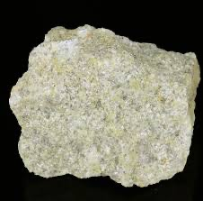
This started as granite. What minerals are missing, and what replaced them?
Show what I see
- A pale, granular rock, yellowish in places, with no visible pink K-feldspar or white plagioclase.
So the feldspars are gone, replaced by quartz and muscovite; the yellowish colour is the muscovite. That’s a greisen, and greisens are where tin and tungsten minerals tend to sit. slide 31 lecture recording, 26 Oct
Mineralisation comes as veins, sheeted veins, lodes and breccia fill, sometimes disseminated. Open cavities lined with euhedral crystals are common, with quartz crystals over a metre long (as at Kingsgate in northern NSW). Veins run from the granite out into the surrounding hornfels, up to about a kilometre, so you may not see the granite at all; much of Cornwall’s tin came from the hornfels. Veins have silicic, feldspathic and mica alteration envelopes, extending vertically for hundreds of metres, zoned with falling temperature and distance from the vein. slides 32 and 33 lecture recording, 26 Oct
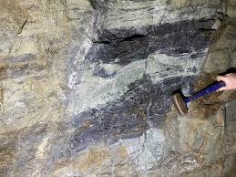
Zone the vein envelope0 / 4
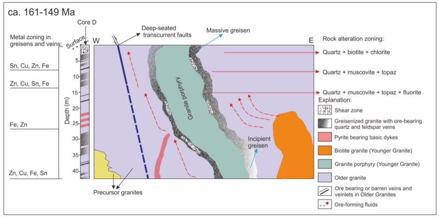
The Mole Granite
The Mole Granite in north-eastern NSW is a lenticular, sill-like body of about 650 km², Triassic (248 Ma), part of the New England Batholith. It intruded Carboniferous and Permian sedimentary and volcanic rocks and hosts more than 1200 small deposits. The tin is in the core, the tungsten along the margin, and lesser Ag, Zn and Pb in the country rocks, all within the top 200 m of the exposed granite. Magmatic fluid from the granite mixed with meteoric water and deposited cassiterite, wolframite, tourmaline and more, over 600 to 200 °C. That’s the slider at the top of the page. slides 36 to 38 (Audétat et al., 1998, 2000)
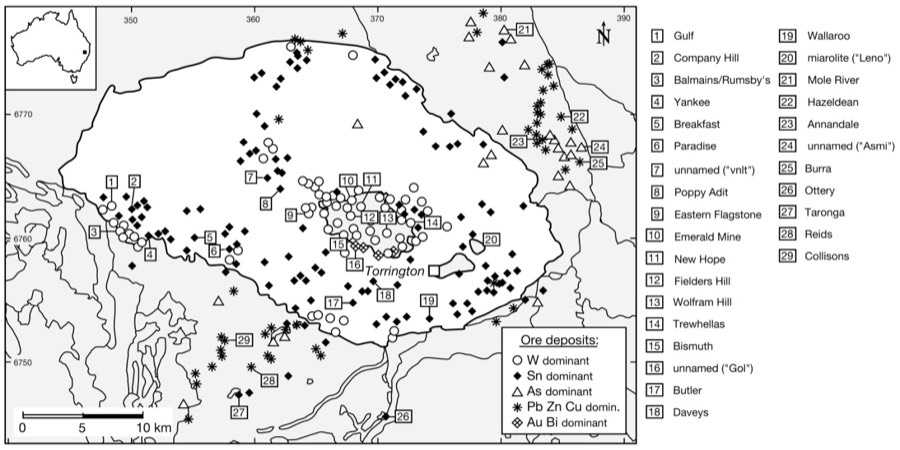
The tin fields were once busy, with tens of thousands of people working the ground around Emmaville and Torrington, first for alluvial cassiterite and then hard rock; Torrington is a ghost town now. At Emmaville, miners hit open cavities metres across lined with perhaps the world’s best cassiterite crystals on quartz. A student study of sulphur isotopes in the sulphides showed values moving toward magmatic as you approach the granite, a way to tell how far you are from the source. slides 37 to 39 lecture recording, 26 Oct
Tallebung
Tallebung, in central NSW, is a Sn-W deposit now being explored by Sky Metals. It was mined underground in the late 1800s and early 1900s for vein cassiterite and silver, then from about the 1930s to the 1980s a private company sluiced the surface material away hydraulically, which stripped the ground and left the veins beautifully exposed. The host is phyllite; the nearest granite is several kilometres away, though the deepest holes, at about 500 m, show the veins becoming more granite-like. The ore is simple: cassiterite and ferberite in quartz with minor sulphides, coarse enough to separate by gravity after crushing. slides 40 to 46 lecture recording, 26 Oct
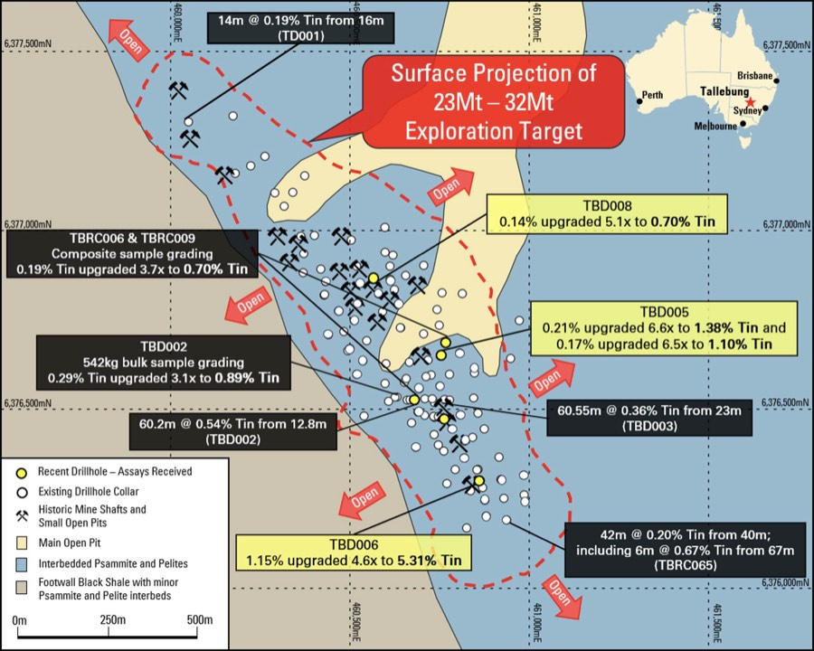
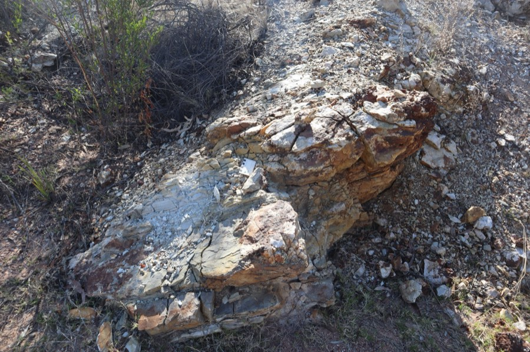
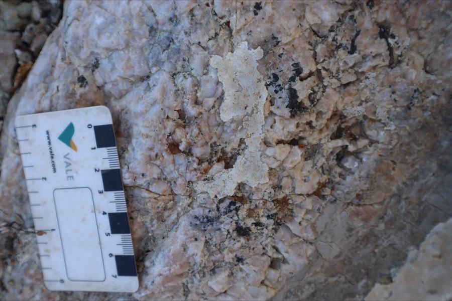
What are the black patches in this quartz, and why would processing this ore be simple?
Show what I see
- Milky white quartz with coarse, black, lustrous patches and grains.
So the black mineral is cassiterite (with ferberite). Both are coarse and very dense, so you crush the quartz and separate them by gravity, almost like panning. No complicated chemistry needed. slide 42 lecture recording, 26 Oct
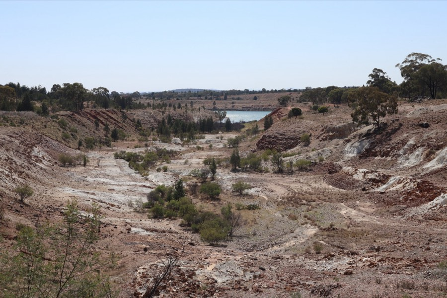
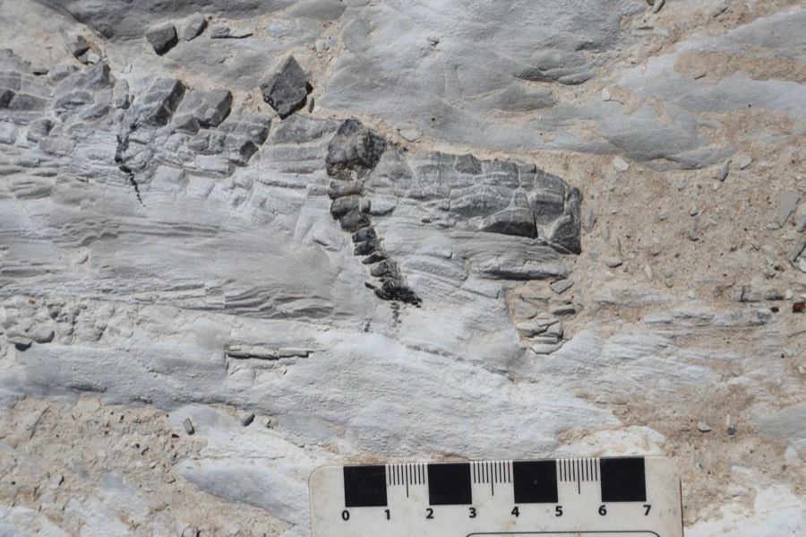
The old open cuts nearby were probably dug for silver: goethite and hematite there replace sulphides and carry silver chlorides, supergene ore from the oxide zone (Lecture 2), which the early miners took before the tin. slides 43 and 44 lecture recording, 26 Oct
- Vein and greisen Sn-W-Mo from high-level (1.5 to 5 km), K-rich, highly fractionated granites; magnetite series (Mo-W) vs ilmenite series (Sn-W).
- Volatiles: H₂O <3 wt% to rise; Cl transports metals; Li, B, F extend fractionation.
- W precipitates at 350 to 300 °C; Sn by mixing, wall-rock and feldspar reaction, replacement.
- Mole Granite: Sn core, W margin, Ag-Zn-Pb in country rock; 1200+ small deposits.
Self-test
Answer out loud or on paper before you open each one. Claim the ounces if you got it.
Glossary and flashcards
Terms this lecture assumes or defines quickly. The dotted words in the text open them in place.
Flashcards
Where this goes next
Lecture 16 moves away from granites to basin brines again: clastic metasediment-hosted polymetallic veins and Mississippi Valley-type deposits, with silver, lead and zinc instead of tin and tungsten.